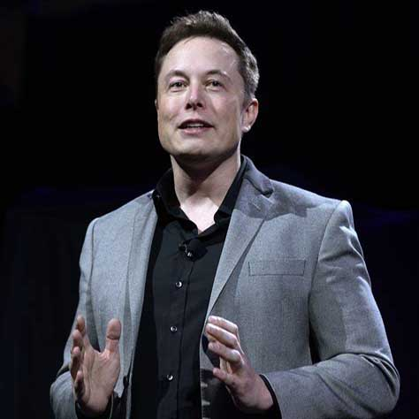

Elon Musk
Quick Facts
Also Known As: Elon Reeve Musk
Famous As:Entrepreneur, Engineer, Inventor
Born Country:South Africa
Nationality:Canadian, American, South African
Birthday:June 28, 1971
Age: 46 Yearss
Sun Sign: Cancer
Born In: Pretoria
Father:Errol Musk
Mother:Maye Haldeman
Spouse/Ex-Spouse: Justine Musk (M. 2000; Div. 2008), Talulah Riley (M. 2010–Div. 2012; M. 2013–Div. 2016
Founder/Co-Founder: PayPal, SpaceX, Zip2, X.Com, Musk Foundation, Tesla Motors
Children:Damian Musk, Griffin Musk, Kai Musk, Nevada Alexander Musk (Died), Saxon Musk, Xavier Musk
Net Worth $20.8 Billion